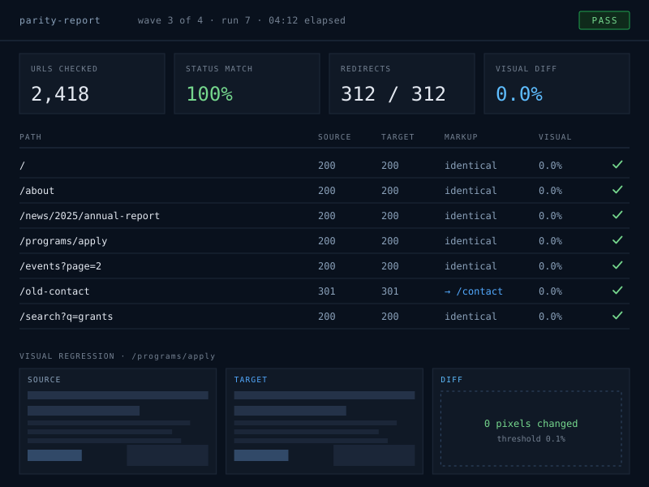

Migration / amazee.io → Any host
amazee.io to any host, rehearsed until it's second nature.
I've moved Drupal and WordPress estates off amazee.io more times than I can count, so I built tooling that does the risky, repetitive parts automatically and proves the new site matches the old one before anyone touches DNS.
30 min · bring your repo URL
From amazee.io
To Any host
-
config
.lagoon.ymlbecomes a documented server config -
cli
lagoonbecomes ssh + rsync -
cdn
Fastly / yoursbecomes your choice -
deploy
any Git CIbecomes Git + CI

§ Why it goes smoothly
I automated the parts that usually go wrong
Most migrations fail on details: a hard-coded amazee.io path, a cron job nobody documented, one page template that renders differently. My tooling finds those before launch day, not after.
- Config translation: .lagoon.yml rewritten to a documented server config, with every change listed for review
- Content parity checks: every URL crawled on both platforms, compared for status, redirects, and markup
- Visual regression: screenshots of key pages diffed side-by-side, down to the pixel
- Rehearsed cutovers: database and files synced and launched on the new host repeatedly until the run is predictable
What I untangle from amazee.io
- Docker images and docker-compose services to re-express
- amazee.io env vars baked into settings.php
- Per-branch environments that need a new home
What you get on the new host
- Git-based deploys over SSH, no more FTP drag-and-drop
- Any provider: a VPS, dedicated server or cloud account
- A written runbook, so your team owns the setup
§ From the people who signed off
Quiet launches, in their words
“The parity report was the first time I've seen a vendor prove a migration worked instead of just saying it did. Our editors didn't notice we'd moved.”
“We'd been quoted six months by an agency. It took ten weeks, and my team came out of it actually understanding the new host.”
“Every question got answered by the person doing the work. Cutover night was the calmest deploy we've ever had, which is exactly what I wanted.”
Ready to leave amazee.io?
Send the repo, or just a site count. On a 30-minute call I'll tell you what moves cleanly to the new host, what needs work, and roughly how long it takes.
- Taking work for this quarter
- NDA on request
- EN / ES